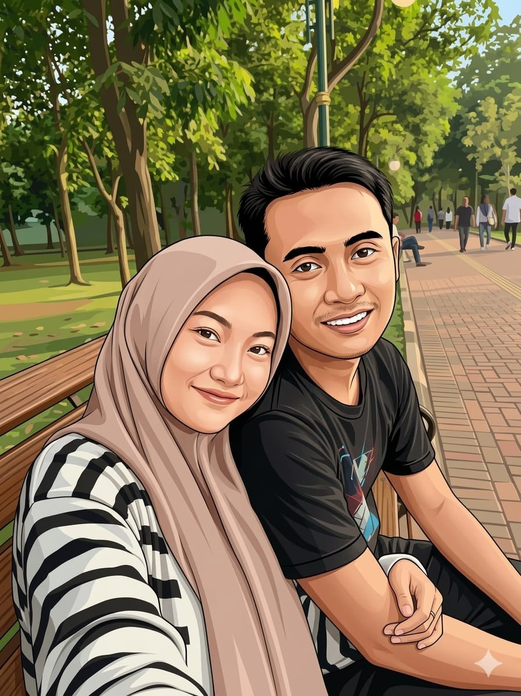

Seorang pengembang antarmuka Web dan spesialis Bot WhatsApp yang berfokus pada automasi dan efisiensi.

Nama lengkap saya Achmad Alfin Muabib Ubaidillah. Saya adalah siswa kelas X SMK yang sangat bersemangat dalam dunia teknologi informasi.
Lahir di Tuban pada 29 September 2009, saya memanfaatkan waktu luang untuk membangun proyek-proyek digital yang dapat membantu banyak orang, seperti bot WhatsApp pintar dan website yang modern.
Membangun website responsif dengan desain modern dan performa tinggi untuk kebutuhan personal maupun bisnis.
Mengembangkan sistem automasi pesan yang cerdas untuk mempermudah manajemen grup atau layanan informasi otomatis.